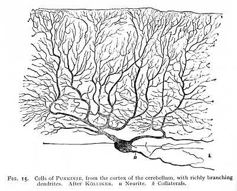
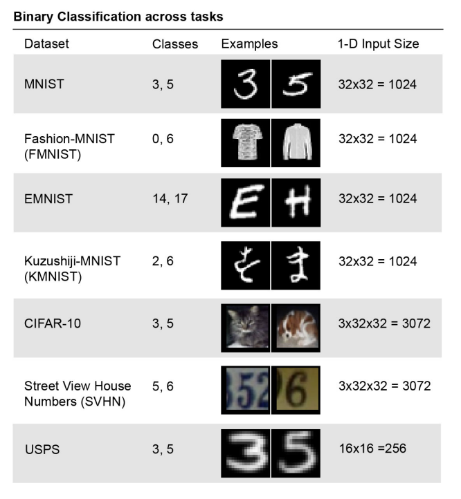
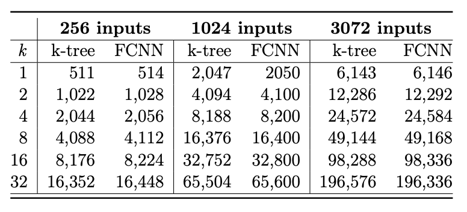
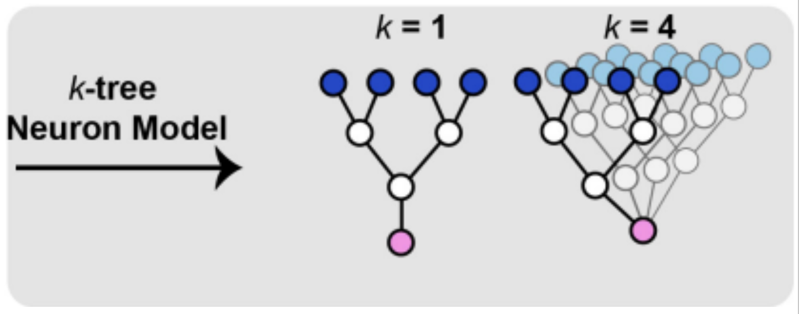
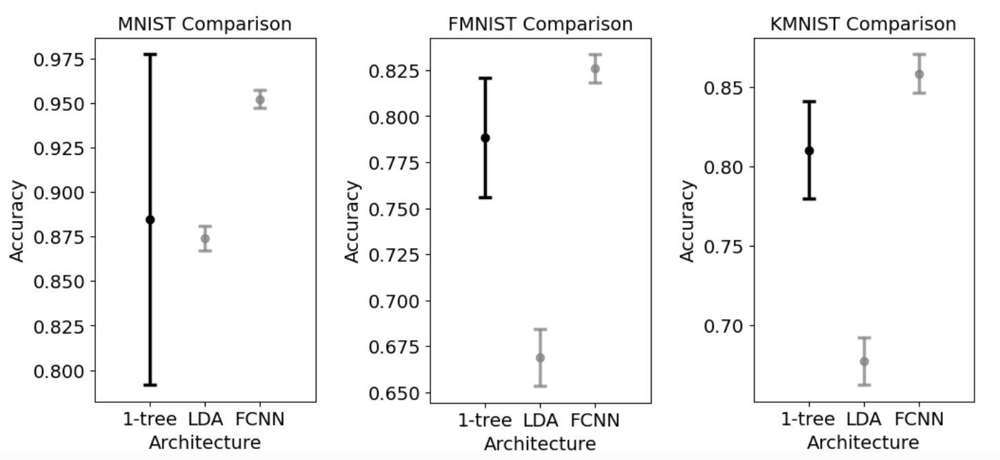
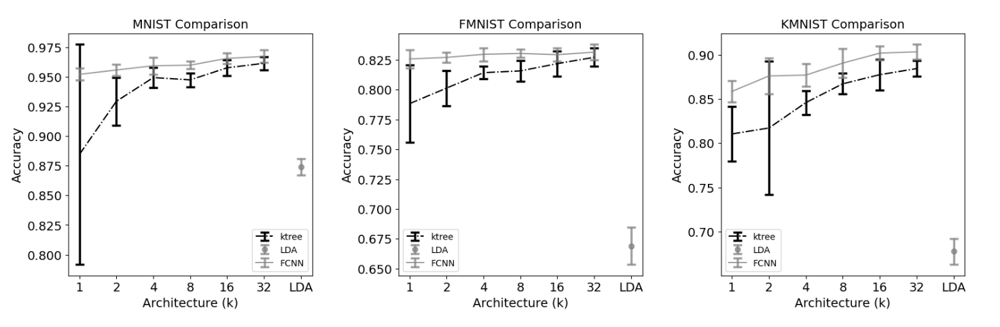
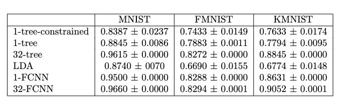

The paper investigates the ability of a neural network architecture inspired by the dendritic functionality of biological neurons in solving image classification problems. Typical artificial neural network architecture involves linearly summing a set of inputs before applying a nonlinear threshhold. This is different from how biological neurons function. The dendrites of biological neurons introduce nonlinearities to synaptic inputs before summation at the soma. The authors of the paper created a neural network model that better approximates the behavior of biological neurons and trained and tested it on multiple image classification datasets. The authors find that these dendritic neural networks can readily solve image classification problems, such as MNIST. One of the flaws of the authors' model is that the weights of the model can be postive or negative. In true biological neurons the weights can only be positive. In this project, we seek to attempt to validate their results and find tradeoffs that come with their model. Additionally, we seek to constrain the weights in the model and rerun it in order to see what effect that greater similarity to biological neurons has on accuracy.
Since the ouputs of a neuron are binary, the authors chose to train their model on a binary classification task. To do this, they went through multiple image classification datasets and found the least linearly seperable classes in each of them. The task of the model was then to distinguish between those two classes. The datasets used are MNIST (Lecun et al., 1998), Fashion-MNIST (Xiao et al., 2017), EMNIST (Cohen et al., 2017), Kuzushiji-MNIST (Clanuwat et al., 2018), CIFAR-10 (Krizhevsky, 2009), Street View House Numbers (SVHN) (Goodfellow et al., 2014), and USPS (Hastie et al., 2001). A fully connected neural network with two layers and one output node was used as a control to compare the k-tree model to.
To implement the k-tree model, a feed-forward neural network was developed with sparse binary-tree connections, where each node connects to two inputs and produces one output. This model features a series of weight matrices that are initially dense tensors but are sparsified in such a way that many weights are set to zero. Specifically, for processing 1024 pixel-size images, the model architecture consists of a 1-tree with 10 layers, where the size of the layers decreases exponentially from 1024 by 512 to 2 by 1. For larger 3072 pixel-size images, an additional layer is included, starting from 3072 by 1024. The final layer in both configurations is structured as k by 1, reflecting the number of subtrees in the k-tree. The initialization of these sparsified matrices uses a Kaiming normal approach, adjusted for the density of the non-zero elements. Additionally, a "freeze mask" is employed to maintain the zero-value weights unchanged during training. The network utilizes leaky ReLU activation with a slope of 0.01 for intermediate nodes and a sigmoid function at the output to keep the final values between 0 and 1.
Figure 3: Parameter Size Comparison. Fully connected neural network (FCNN) architectures are matched in parameter size to the k-tree architectures.
In the training, the authors used a Nvidia GeForce 1080 GPU with CUDA version 10.1. The model and its components were configured with a batch size of 256. An early stopping mechanism was implemented, where training would cease if no improvement in loss was observed over 60 epochs. Binary cross entropy loss was used to calculate loss. The Adam optimizer, with a learning rate of 0.001, was used for adjustments in the model's weights. A significant step in the training process involved zeroing out gradients specified by a "freeze mask" right after the backward step (where gradients are computed) and before the weights are updated. This technique was used to maintain sparse connections within the model. The experiment ran a train-test loop across 10 trials, using different subsets for training in each trial, while testing was consistently performed on the same dataset. After completing these trials, averages and standard deviations of the outcomes were computed, and statistical significance was assessed using Student's t-test.
The model demonstrated enhanced performance in high-dimensional binary image classification tasks compared to a linear classifier and approached the performance of a fully connected neural network (FCNN) when the number of dendritic repetitions was increased, specifically matching FCNN in several tasks. However, the study's relevance is limited by the biologically implausible one-dimensional vectorized inputs used, which affected performance depending on their order—an area identified for further investigation. Moreover, the constrained dendritic tree model's assumptions about synaptic inputs and inter-node weights warrant reevaluation to increase biological plausibility. Future work will involve comparing the performance of this dendrite-inspired structure with less structured sparse ANNs and exploring the impacts of modifying input ordering and parameter constraints on model efficacy.
We replicated the authors' model architecture, using a k-tree model to be a feed forward neural network with sparse binary-tree connections. We sparsified the
weight matrices by having each node receive 2 inputs and producing 1 output. The final layer of this tree is k by 1, k being the number of subtrees in the k-tree.
We used a freeze mask
that records which weights are set to 0 in order to freeze 0-weights during training. Additionally, we used a sigmoid non-linearity at the
final output node which keeps output values between 0 and 1, and we used a leaky ReLU with a 0.01 slope for nodes between layers.
For baseline comparison, we also ran LDA, FCNN models, as they did in the paper. The linear discriminant analysis (LDA) linear classifier was relatively simple, using the out of box Sklearn package. This model is relatively simple and uses dimension reduction to do linear classification. This model was used to " approximate the performance of a linear point neuron model" (Jones, 2020). The fully connected neural network (FCNN) is more complex and size-comparable to parameter-complex k-tree. The FCNN densely connected and consists of 2-layers. With its nonlinearities, we expect it to learn to express a greater variety of functions, therefore its performance sets an expected upper bound. In total, we trained 13 models: an LDA, ktrees where k = 1, 2, 4, 8, 16, and 32, and each of the ktrees' analagous FCNNs.
In attempts to make a more biologically-inspired neural network, we constrained the values of the weights to only be positive. We did this by applying an absolute
value function during the standard Kaiming normal
weight initialization. Additionally, during training, we clamp the values to be non-negative. We trained
a 1-tree model with these weight constraints on MNIST, FMNIST, and KMNIST.
We ran both k-tree and fcnn for k = 1, 2, 4, 8, 16, and 32. We also ran LDA. Due to the exorbitant training time required the train on all seven datasets that the authors used, we only ran the models on three datasets MNIST, FMNIST, and KMNIST. For all of these models and datasets we compare their accuracies to those reported in the paper.
Figure 1: Performance of 1-tree compared to LDA and FCNN. 1-tree performance is compared to that of a lower bound, LDA, and an upper bound, FCNN. For most tasks, the 1-tree performs better than LDA, and FCNN performs better than the 1-tree.
Comparatively, the models performed as expected. Following suit with the authors' results, in most cases FCNN outperforms the analgous k-tree and the k-tree outperforms LDA in terms of accuracy. The only major difference lies in the much wider range of accuracies for the 1-tree in the MNIST dataset. Our mean accuracy for 1-tree MNIST remains relatively similar (only ~.3 smaller). We find that these differences are negligible and can be attributed to differences in the random initialization of the model, and thus consider our results a successful sign of replicating the authors' results.
Figure 2: Performance of k-tree compared to LDA and FCNN. k-tree performance is compared to that of a lower bound, LDA, and an upper bound, FCNN. The k is doubled 5 times, resulting in tests of k = 1, 2, 4, 8, 16, 32. In most cases, as k (the number of repeated dendritic subtrees) increases, so does the performance accuracy of the k-tree, approaching the upper bound.
Viewing the FCNN and k-tree model accuracies, the models improve as expected. Similar to the authors' results, in the majority of cases as k increases, so does the performance accuracy of the k-tree. The only difference in our results is a dip in the k-tree accuracy in the MNIST dataset when k=8. This is likely negligble, as our results followed the trend of an upward trajectory accuracy as k increases, approaching the upper bound accuracy of the FCNN.
We find that constraining the weights of the 1-ktree to only be positive still allows it to successfully complete the classification tasks given for MNIST, FMNIST, and KMNIST. However, the accuracy is slightly lower than the non-constrained 1-ktree on the three datasets. This is likely because constraining the weights hinders the model from finding the optimal weight configuration. The accuracies for this model compared to some of the other models we trained can be found in the figure below.
Despite the ktree models being able to closely match the classification ability of FCNNs, they present a major disadvantage in that they take significantly longer to train. When k=1, this difference is realtively low: 2 minutes for the FCNN, 7 minutes for the ktree. However, as model complexity increases, this gap grows significantly. When k=32, the FCNN training time stays at 2 minutes while the ktree training time is in excess of 4 hours.
Through our experiments with k-tree, LDA, and FCNN, we confirm the results of the authors. Nonlinear tree neuron model (k-tree) performs better than a linear classifier (LDA) in almost all cases. Additionally, repeating inputs to tree model (k-tree) increases performance comparable to FCNN with a small fraction of the parameters. However, the tree models take significantly longer to train compared to FCNNs, with the gap increasing with model complexity. Unless these tree models can be made to be trained faster, they will lack many practical applications and will remain a research curiosity.
Upon confirming the results of this paper and the potential power of the nonlinear tree neuron model, we realize the merit in developing biologically-inspired neural networks. More work in this area may help us decipher the mechanism behind intuition in animal brains and guide us towards creating better neural networks. Given the energy efficiency of human brains, modelling neurons after the human brain may help us create more energy efficient neural networks. This is an especially important problem because presently, large neural networks require very significant amounts of energy to train. With more efficient neural architectures, this problem can be improved.
At the moment we do not see any potential ethical issues with the work done in this project.
[1] Ilenna Simone Jones and Konrad Kording. Can Single Neurons Solve MNIST? The Computational Power of Biological Dendritic Trees. (2020)
John Mathew and Ben Tunney